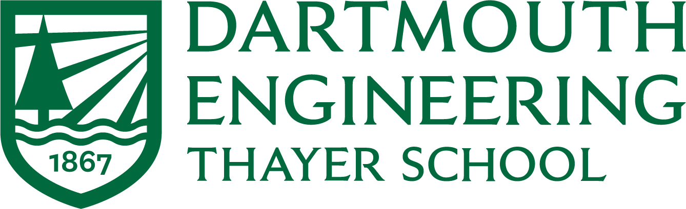
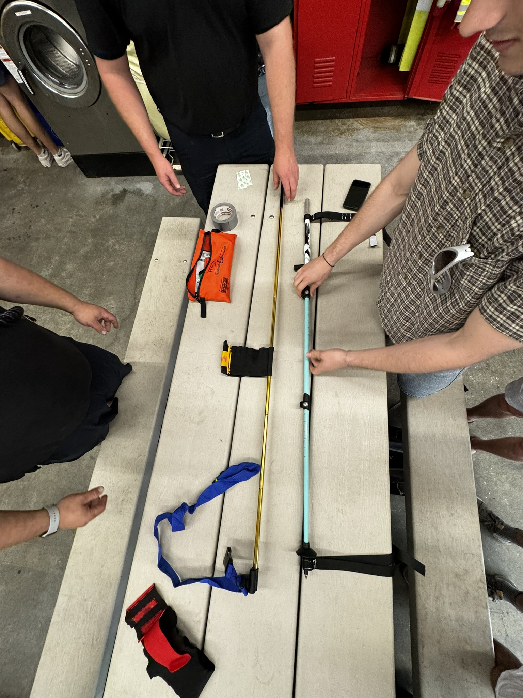
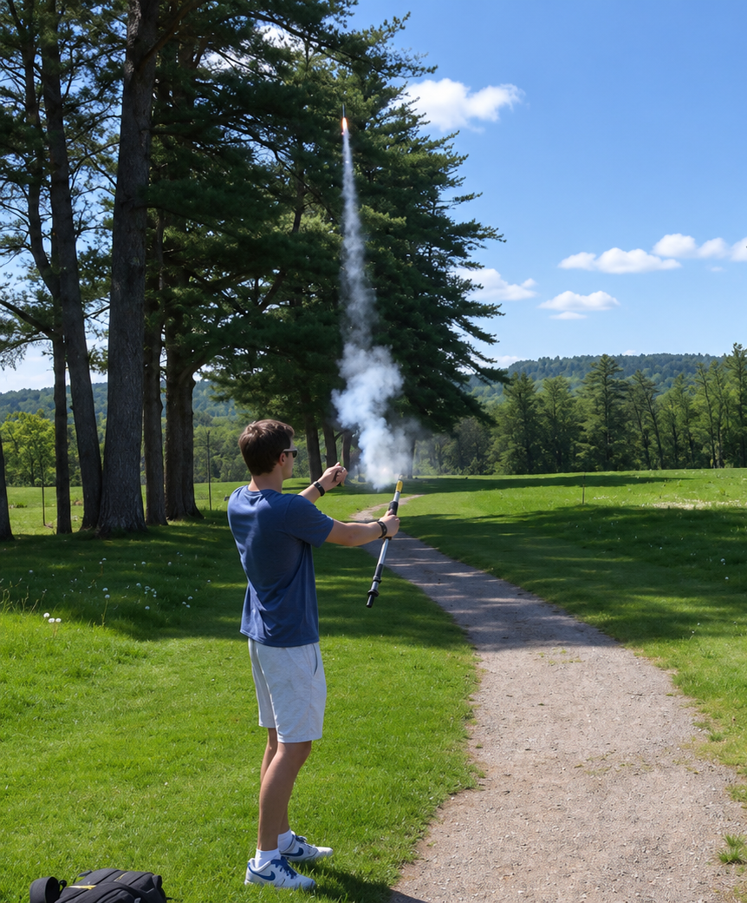
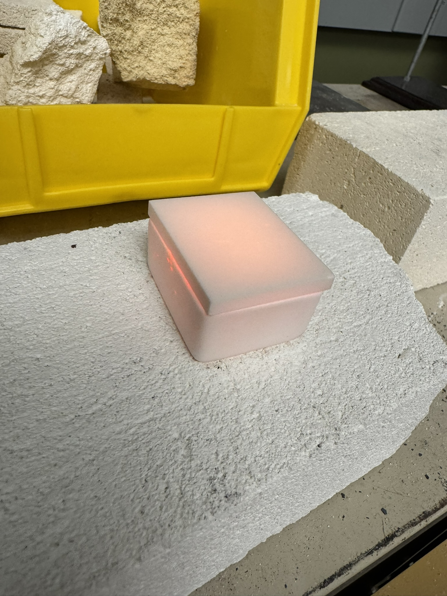
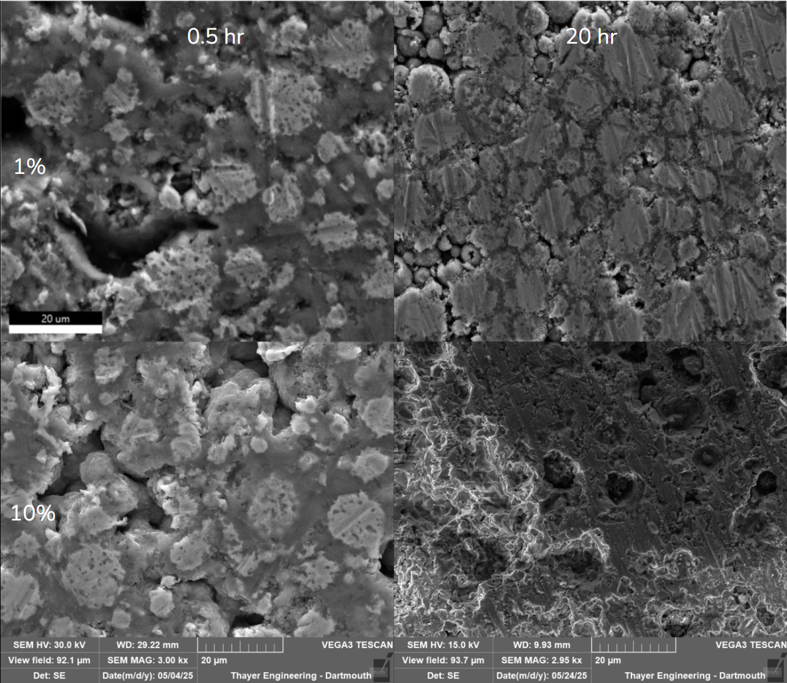
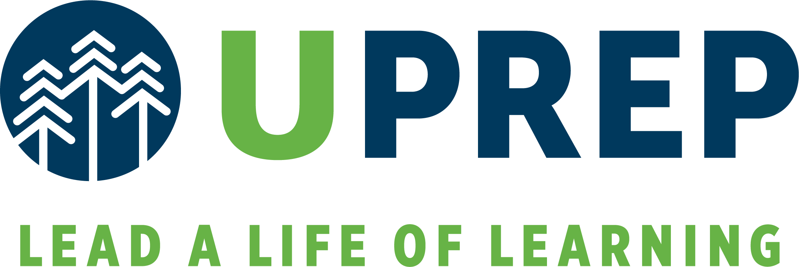

Education / Foundations for building
Curiosity.
With a foundation
Studying engineering at Dartmouth, connecting mechanical design, controls, and embedded systems with hands-on work.
01 / Master’s
Thayer School of Engineering

Electrical & Computer Engineering
Begins Sep 2027 Expected Grad. Jun 2028
02 / Undergraduate
Dartmouth College
Thayer School of Engineering · Hanover, NH
Mechanical design.
Engineering fundamentals.
Hands-on learning.
- Bachelor of Engineering / B.E.
Mechanical Engineering
- Expected Jun 2027
- Bachelor of Arts / B.A.
Engineering Sciences
- Expected Jun 2027
The technical foundation
Relevant coursework.
- Materials
- Solid Mechanics
- Thermodynamics
- Systems
- Scientific Computing
- Statistics
Recognition
Honors & awards.
- Philip R. Jackson Award
- 1st Challenge Prize · Tuck Lab
- Best Bridge Design
Project-based coursework
-
ENGS 21
Introduction to Engineering
Led a group of five to design and build the ResQ Stick: a hiking pole with a built-in flare, traction splint, gauze, and other rescue equipment.

Discussing the splint with firefighters 
Testing the flare -
ENGS 24
Science of Materials
Experimented with different sintering techniques and compositions to make nitinol with ideal properties.

Waiting for the sample to cool down 
SEM material composition results - ENGS 26
Control Theory
- ENGS 33
Solid Mechanics
- ENGS 76
Machine Engineering
- ENGS 89/90
Engineering Design Methodology (Capstone)
- ENGS 93
Statistical Methods in Engineering
03 / Tuck School of Business
Business Bridge
Program
Hanover, NH · Nov – Dec 2025
Completed an intensive business certificate taught by Tuck MBA faculty, covering leadership, finance, accounting, marketing, and strategy through coursework and a team company-valuation capstone.
About Tuck Bridge04 / High School
University Preperatory Academy
Seattle, WA · Sep 2019 – Jun 2023

High School DiplomaFounded the Engineering Club, co-led the Computer Engineering Club, and served as VEX Robotics Captain and Varsity Tennis Captain.
- Engineering Club Founder
- Computer Engineering Club Co-Head
- VEX Robotics Captain
- Varsity Tennis Captain
Putting it into practice